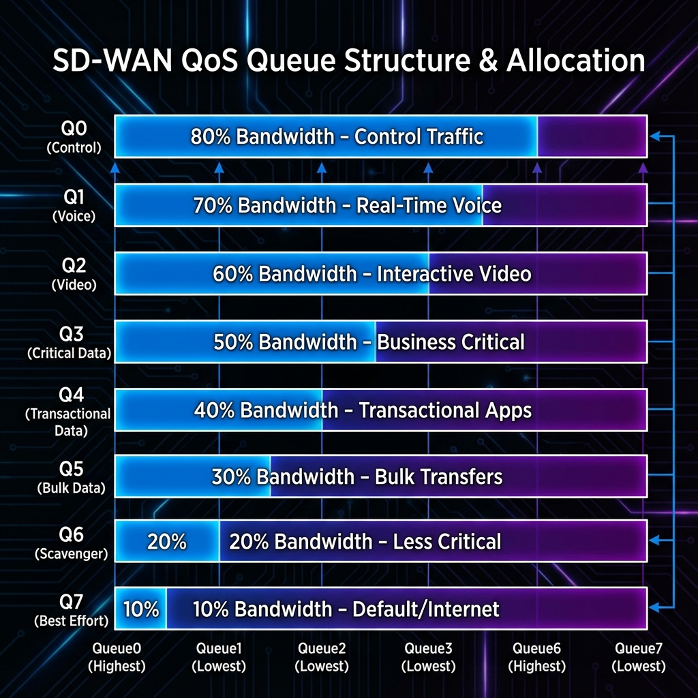

Chapter 10
Localized Policies
Learning Objectives
- Memahami localized policy types dan use cases
- Mengkonfigurasi QoS policies di edge
- Mengimplementasikan Access Control Lists (ACLs)
- Menggunakan route policies untuk local routing decisions

Gambar 10.1 - Struktur 8 queue QoS dalam SD-WAN dengan alokasi bandwidth
Localized Policy Types
Localized policies di-define dan di-apply langsung di edge device tanpa melalui vSmart.
| Policy Type | Purpose | Applied To |
|---|---|---|
| QoS Policy | Traffic prioritization | Interface/Tunnel |
| Access List | Permit/Deny traffic | Interface |
| Route Policy | Control route import/export | VPN |
| Rewrite Rule | DSCP remarking | Interface |
QoS Configuration
QoS Components:
📊 Class Maps
- Define traffic classes based on DSCP, source/dest
- Up to 8 forwarding classes supported
⚙️ Schedulers
- Bandwidth allocation per class
- Queue depth and drop behavior
- Buffer allocation
🎯 Shapers
- Rate limiting untuk traffic egress
- Burst size control
Default QoS Classes
SD-WAN memiliki 8 default forwarding classes: Queue0 (control) sampai Queue7 (best effort).
Access Control Lists
ACLs di SD-WAN mengontrol traffic permit/deny berdasarkan packet criteria.
ACL Types:
- IPv4 ACL: Standard dan extended untuk IPv4
- IPv6 ACL: For IPv6 traffic control
- Implicit ACL: Built-in rules untuk control traffic
Match Criteria:
| Criteria | Description |
|---|---|
| Source/Dest IP | Prefix matching |
| Protocol | TCP, UDP, ICMP, etc |
| Port | Source and destination |
| DSCP | Differentiated services |